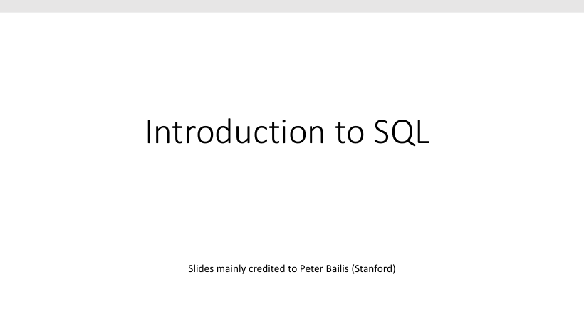
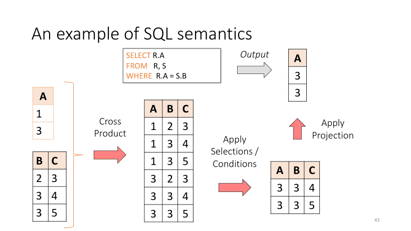

P1
SQL 引入：本讲出处

这是 L2 的第一页，交代出处：本讲幻灯片主要来自斯坦福 Peter Bailis 的数据库课程。把它当开场就好——L1 已经讲了「数据要采集、要处理」，这一讲正式回答「数据存成二维表之后，怎么把想要的行取出来」。后面 L3 的文档去重、L9 的推荐集合运算，用的都是这一讲的语法。
覆盖 p5–p108（SQL Part I 基础查询 + Part II 集合运算/嵌套/聚合/NULL/外连接）。本讲是半期卷面分值最集中、最容易靠练习拿满的一讲：既有"写查询"也有"算行数/算聚合"的计算题。
SQL 既是 DDL（定义 schema，create/alter/delete 表与属性），也是 DML（插入/删除/修改元组，以及查询）。它是声明式的高级语言：你只写"要什么"，由优化器决定"怎么算"——课件甚至说它大概是"世界上最成功的并行编程语言"（parallel programming language，暗示多核时代的并行计算）。
课件定义：一个 relation（表）是 multiset of tuples，其属性由 schema 指定。四个词必须分清：attribute（列）是有原子类型的条目；tuple（行，也叫 record）是一条记录；cardinality 是元组个数；arity 是属性个数。multiset 是"允许重复的无序表"：列表 [1,1,2,3]、集合 {1,2,3}、multiset {1,1,2,3} 三者不同，并且 multiset 没有 next() 方法——行序本质无序，这也是 ORDER BY 存在的理由。
数据类型：字符 CHAR(20) / VARCHAR(50)；数字 INT / BIGINT / SMALLINT / FLOAT；其它 MONEY / DATETIME。每个属性必须是原子类型（不能是 list/set），所以关系表是"平的（flat）"。判断题"一张表的某列可以存数组"→ 标准 SQL 里错。
例：Product(PName, Price, Category, Manufacturer) 的 arity = 4；若表里 4 行，cardinality = 4；两行完全相同也合法（multiset）。
定义要背原话：key 是属性的最小子集，能唯一标识关系中的元组；作为约束，它的含义是"若两个元组在 key 上取值相同，则它们必是同一个元组"。三个高频问答：① key 一定存在吗？不一定，必须在 CREATE TABLE 里显式声明，不声明就没有；② 一张表能有几个 key？primary key 只能一个，但 candidate key / unique 约束可以有多个（如 sid 与 email 都唯一时，选一个当 primary，另一个仍可作为 unique key）；③ 复合键：Enrolled(student_id, cid) 用两列一起当主键，单独任何一列都不唯一。
课件场景：Enrolled(student_id, cid, grade) 里 student_id 单独不是 key（一个学生选多门课），但它必须指向 Students 里已存在的学生，否则违反"只有正式学生才能选课"。写法：
CREATE TABLE Enrolled(
student_id CHAR(20),
cid CHAR(20),
grade CHAR(10),
PRIMARY KEY (student_id, cid),
FOREIGN KEY (student_id)
REFERENCES Students(sid)
)
两个必考后果：插入不存在的 student_id → INSERT 被拒绝（foreign key 是约束，不是提示）；删除被引用的学生 → 由 DBA 选策略：① 禁止删除；② 级联删掉该生所有选课记录；③ 把引用置为 NULL（SQL 允许的第三种做法，要求该列可空）。
| 维度 | Key / Primary Key | Foreign Key |
|---|---|---|
| 作用范围 | 本表内唯一 | 跨表（或自引用）指向另一张表的 key |
| 能否重复 | 不能（唯一） | 能（很多选课共享同一个 student_id） |
| 能否为 NULL | 主键不能 | 可以（若该列可空；NULL 表示未知/不适用） |
| 一张表几个 | primary 1 个；candidate/unique 多个 | 可以有多个 |
| 违反时 | 插入重复 → 拒绝 | 插入孤儿 → 拒绝；删除被引用行 → 拒删/级联/置 NULL |
schema 与约束不只管"正确性"，也是优化的依据（课件 p19）：知道 sid 唯一，优化器就能选更快的 join 计划；知道某列 NOT NULL，就能省掉一批 NULL 判定。所以"约束让插入变慢"与"约束让查询变快"是同一件事的两面，答题时两句都写才完整。
为什么一般情况下不写 general constraints（如"数据库课不能有 25 人"）：性能。课件原话——每当要做丑事（或避开便利），都是为了性能；约束越自由，每次插入的检查代价越高。
基本形式三行，课件叫它 SFW query：
SELECT <attributes> FROM <Table> WHERE <conditions>
两个操作名来自关系代数：Selection（选择）按条件筛元组（行），Projection（投影）输出属性子集（列）。注意投影不自动去重，重复行照留，除非写 DISTINCT。
SELECT PName, Price*0.9 AS SalePrice；SELECT * 带出全部属性（问"输出 schema 有几个属性"时要数清）。ORDER BY Price, PName：先按 Price 升序，Price 相同的用第二个属性破平；默认 ASC，降序写 DESC。课外补充：NULL 在排序中排最前还是最后由 DBMS 决定（SQL 标准未统一），题目没说明就不必纠结。
例：SELECT PName, Price FROM Product WHERE Category = 'Gadgets' ORDER BY Price DESC；输入 schema 是 Product(PName, Price, Category, Manufacturer)，输出 schema 只有 (PName, Price)——常问"输出几个属性"，看 SELECT 列表即可。
课件反复强调：join 的语义（semantics）是"先笛卡尔积 → 再按条件过滤 → 最后投影"。这不是 DBMS 的执行顺序（课件专门澄清：说的是 semantics，不是 execution order），但它决定查询"应该"返回什么，是所有反直觉题的推理工具。
Answer = {}
for x1 in R1:
for x2 in R2:
if Conditions(x1, x2):
Answer = Answer ∪ {(x1.a1, x2.a2)}
return Answer # 注意：multiset 并，不去重
把 join 实现成嵌套循环就是上面的二重循环——所以漏写连接条件时结果会退化成一个巨大的笛卡尔积，这是"查询为什么返回 N×M 行"的第一诊断点。

三步里每一步的行数都能算，这是"给两张小表问结果行数"的固定套路：① 笛卡尔积 = |R| × |S|；② 过滤后 = 满足连接条件与过滤条件的组合数（一个 R 元组匹配 k 个 S 元组就产生 k 行）；③ 投影不改变行数，除非 DISTINCT。所以结果行数 = 左表行数 × 平均匹配数。
例：R 有 3 行、S 有 4 行，条件 R.A = S.B，若 R 的每个值在 S.B 中平均出现 2 次，则结果 3 × 2 = 6 行；若连接列在 S 上是 key（唯一），结果最多 3 行。反过来，若结果恰好是 3 × 4 = 12 行，说明条件里很可能根本没有连接条件。
课件那道题：SELECT DISTINCT R.A FROM R, S, T WHERE R.A = S.A OR R.A = T.A，看起来像 R ∩ (S ∪ T)，但若 S 为空，结果也是空集——S 为空时 R × S × T 本身就是空，后面的 OR 根本无从作用。结论：永远用语义（笛卡尔积）验算，别凭"看起来像集合运算"下结论。
找"日本制造、价格不超过 200 的产品名与价格"：
SELECT PName, Price
FROM Product, Company
WHERE Manufacturer = CName
AND Country = 'Japan'
AND Price <= 200
-- 等价写法（inner join）：
SELECT PName, Price
FROM Product JOIN Company
ON Manufacturer = CName
WHERE Country = 'Japan'
AND Price <= 200
元组变量歧义：Person(name, address, worksfor) 与 Company(name, address) 同时在 FROM 里时，SELECT DISTINCT name, address FROM Person, Company WHERE worksfor = name 的 name/address 指哪张表？标准做法是表名限定或别名：SELECT DISTINCT Person.name, Person.address FROM Person, Company WHERE Person.worksfor = Company.name，或 FROM Person p, Company c WHERE p.worksfor = c.name。答题一律写限定名，既清楚又免除歧义。
三个显式运算符：INTERSECT（交）、UNION（并）、EXCEPT（差）。默认都用集合语义（自动去重）；写 ALL 才切换成 multiset 语义。这就是"UNION 为什么没有重复行""为什么 COUNT 会重复计"的根源。multiset 用计数函数 λ(t) 描述：λ 为 0 的项也要写出来参与 min/max。
算一遍（课件原例）：λ_X = {(1,a):2, (1,b):0, (2,c):3, (1,d):0}，λ_Y = {(1,a):5, (1,b):1, (2,c):2, (1,d):2}。则交 = {2, 0, 2, 0}；并（ALL）= {7, 1, 5, 2}；差 = {0, 0, 1, 0}。注意 (1,b) 在 X 中 count 为 0 但 Y 中为 1，所以并里它是 1、交里是 0。
题目："找出在美国和中国都设厂的公司的总部城市"。初学者写：
SELECT hq_city FROM Company, Product WHERE maker = name AND factory_loc = 'US' INTERSECT SELECT hq_city FROM Company, Product WHERE maker = name AND factory_loc = 'China'
课件反例：X Co. 总部 Seattle 只有美国厂；Y Inc. 总部也在 Seattle 只有中国厂。没有任何一家公司"两国都有厂"，可两个子查询都返回 'Seattle'，交集就把它留下了——因为INTERSECT 做在了 hq_city 上，而条件其实是关于 company 的。正确做法是把两个条件约束到同一个公司上：
SELECT DISTINCT hq_city
FROM Company, Product
WHERE maker = name
AND name IN (SELECT maker FROM Product
WHERE factory_loc = 'US')
AND name IN (SELECT maker FROM Product
WHERE factory_loc = 'China')
这里 DISTINCT 不能省：没有它，每匹配一条 Product 元组就输出一次 hq_city（multiset 放大重复）。
再补一个常考对比：UNION 与 UNION ALL 的差别只在重复——UNION 去重，UNION ALL 保留全部。课外补充：去重必须先排序/建哈希，所以 UNION ALL 通常比 UNION 快；已知两个结果集不重叠（如按年份切分）时应该用 ALL。答题时若被问"哪个更快、为什么"，答"UNION ALL 省掉了去重开销"。
INTERSECT / EXCEPT 并非所有 DBMS 都支持，所以常问"怎么改写"：INTERSECT → EXISTS (...) 或 JOIN；EXCEPT → NOT EXISTS (...) 或反连接 LEFT JOIN ... WHERE 右表 key IS NULL（前提：R、S 各自无重复）。
为什么能嵌套：SQL 是组合式（compositional）的——一切输入输出都表示为 multiset，一个查询的输出能直接当另一个的输入。子查询返回的就是一张关系表，因此可接 IN / ANY / ALL / EXISTS。
WHERE name IN (SELECT maker FROM Product WHERE factory_loc='US')。WHERE price > ALL (SELECT price FROM Product WHERE maker='Gizmo-Works') = 比 Gizmo-Works 所有产品都贵。课外补充：ANY/ALL 在 SQLite 中不支持，若题目指定 SQLite 要改用 MAX/MIN 子查询。p1.name = p2.name 引用外层变量 → 这就是相关子查询）。存在量词（existential，"there exists"）很容易写：找"至少有一个产品价格 < 100 的公司"，直接 join + 过滤即可。而全称量词（universal，"for all"）很难：找"所有产品价格都 < 100 的公司"，标准做法是双重否定——不存在任何一个价格 ≥ 100 的产品属于它：
SELECT DISTINCT Company.name
FROM Company
WHERE Company.name NOT IN (
SELECT company FROM Product
WHERE price >= 100)
例：NOT EXISTS (SELECT * FROM Product WHERE company = c.name AND price >= 100) 与上面的 NOT IN 等价，但 NOT IN 在子查询结果含 NULL 时会失效（见易错点），所以考试写 NOT EXISTS 更稳。
这类 "for all" 题是半期最典型的"想不出就写不出"的题，记住模板：∀ 条件 ≡ ¬∃ 反例——把"全部满足"翻译成"不存在不满足的"。
课件 p68 的对比：多表版 FROM Company c, Product pr, Purchase p WHERE c.name = pr.maker AND pr.name = p.product AND p.buyer = 'Joe Blow'；嵌套版 WHERE c.name IN (SELECT pr.maker FROM Purchase p, Product pr WHERE p.product = pr.name AND p.buyer = 'Joe Blow')。不写 DISTINCT 时两者行数不同：多表版每条匹配的购买记录输出一行（一个城市可能重复很多次），嵌套版每个 company 只输出一行（IN 只是存在性判断，不放大）。两边都加 DISTINCT 后才等价——课件原话就是 "Beware of duplicates"。
内层引用外层变量，因此外层每行都要重跑一次内层。课件两例：① 找"标题出现不止一次"的电影：SELECT DISTINCT title FROM Movie m WHERE year <> ANY (SELECT year FROM Movie WHERE title = m.title)——存在同名但年份不同的记录即成立（<> 就是 !=）。② 找"比同厂商 1972 年前所有产品都贵"的产品，内层用 x.maker = y.maker AND y.year < 1972 与外层关联。课件评价：相关子查询"可以非常强大，但也难优化得多"——这就是"能写但别滥用"的标准考点。
题目：找写过至少 10 篇文档的作者（Author(login,name)、Wrote(login,url)）。
-- novice：聚合写在 WHERE 里，语义错误且极低效
SELECT DISTINCT Author.name FROM Author
WHERE COUNT(SELECT Wrote.url FROM Wrote
WHERE Author.login = Wrote.login) > 10
-- expert：GROUP BY + HAVING
SELECT Author.name
FROM Author, Wrote
WHERE Author.login = Wrote.login
GROUP BY Author.name
HAVING COUNT(Wrote.url) > 10
三点结论：① 聚合条件必须放 HAVING，不能放 WHERE；② GROUP BY 已保证每组一行，不需要 DISTINCT；③ 嵌套版要对每个作者各跑一次全表扫描，GROUP BY 版只扫一遍，效率高得多。
五个聚合：SUM / COUNT / MIN / MAX / AVG。除 COUNT 外都作用于单个属性，COUNT(*) 数所有行。COUNT 默认计入重复：COUNT(category) 不去重（该列非空时等价于 COUNT(*)），要不同值必须写 COUNT(DISTINCT category)。课件说 COUNT(category) 与 COUNT(*) 相同，前提正是该列 NOT NULL；若该列可空，两者结果不同：COUNT(*) 数所有行，COUNT(col) 跳过 NULL 行。
语义四步（背下来就能手算任何 GROUP BY 题）：① 算 FROM-WHERE，按 C1 过滤元组；② 按 a1…ak 分组；③ 对每组应用 C2（可用聚合）；④ 算 S 里的聚合，每组输出一行。
Purchase(product, date, price, quantity) 四行：bagel 10/21 单价 1 数量 20；bagel 10/25 单价 1.5 数量 20；banana 10/3 单价 0.5 数量 10；banana 10/10 单价 1 数量 10。查询按 product 求 SUM(price × quantity) AS TotalSales。
若再加 HAVING SUM(quantity) > 30：Bagel 的数量和 40 保留，Banana 的 20 被过滤 → 只剩 Bagel 一行。这是"WHERE 先过滤行、HAVING 后过滤组"的最好例子。
为什么 SELECT 不能随便写非分组列：一个组里会有多个不同值，数据库无法决定输出哪个（标准 SQL 直接报错；MySQL 宽松模式会随机取值，这正是坑）。
NULL 表示"不知道值"，至少涵盖三种语义：值不存在、值存在但未知、值不适用。schema 规定每列能否为空，可用 NOT NULL 约束（如 Students.name）。数值运算有传染性：x 是 NULL 时，4*(3−x)/7 仍是 NULL；而 x = 'Joe' 的结果不是 FALSE，是 UNKNOWN。
① WHERE (age < 25) AND (height > 6 AND weight > 190) 不返回 height 为 NULL 的行：0.5 与其它值取 min 后 ≤ 0.5，不是 1。② WHERE age < 25 OR age >= 25 看似覆盖全部，同样漏掉 age 为 NULL 的行：0.5 与 0.5 取 max 仍是 0.5。修法只有一个——显式判断：WHERE age < 25 OR age >= 25 OR age IS NULL；并用 IS NULL / IS NOT NULL，不能写 x = NULL（NULL = NULL 结果是 UNKNOWN）。
例：Students 表 Jim 的 gpa 为 NULL，则 WHERE gpa >= 3.0 OR gpa < 3.0 不会返回 Jim。
默认的 join（逗号写法、JOIN ON、INNER JOIN ON 三种等价）是 inner join：只保留两边都匹配的组合。所以"从未售出的产品"在 Product JOIN Purchase ON Product.name = Purchase.prodName 里直接消失。外连接把没匹配的一侧用 NULL 补上：
外连接两个经典用途：① 找"没有…的"（反连接）LEFT JOIN ... WHERE 右表.key IS NULL，等价于 NOT EXISTS；② 把 EXCEPT 改写成不依赖该运算符的查询（课件 p74 给的正是这个技巧）。
注意外连接补出来的 NULL 表示的是"没有匹配"（不适用），与前面说的"值未知"不是一回事——这正是反连接能用 WHERE 右表.key IS NULL 判定的原因：真值来自"这一侧本来就没有行"，而不是"有行但值是 NULL"。
| 类型 | 保留什么 | 不匹配时 | 典型用途 |
|---|---|---|---|
| INNER JOIN | 只保留两边都匹配的组合 | 整行丢弃 | 常规关联查询 |
| LEFT OUTER | 左表全部 + 匹配的右表 | 右表列填 NULL | 保留主表全量（含未售出商品） |
| RIGHT OUTER | 右表全部 + 匹配的左表 | 左表列填 NULL | 与 LEFT 镜像（换表顺序即等价） |
| FULL OUTER | 两边全部 | 两侧缺的都填 NULL | 对账/合并两套名单 |
LEFT JOIN Purchase ON ... WHERE Purchase.store = 'Wiz' 会把 NULL 行（未售出产品）全部删掉，外连接退化成内连接。右表的条件要放 ON 里。x NOT IN (...) 变成 UNKNOWN，一行都不返回。课外补充：这是三值逻辑的直接后果，课件未点名但极常考；改用 NOT EXISTS 或先过滤 NULL。SELECT R.A FROM R, S WHERE R.A = S.B 的结果行数与内容；加上 DISTINCT 后呢？若 S 为空表呢？答案：2 行，值是 3、3；加 DISTINCT 后 1 行（值 3）；S 为空则 0 行。
步骤：先笛卡尔积得 2×3 = 6 行组合；再按 R.A = S.B 过滤 —— (1, (2,3)) 1≠2 淘汰，(1,(3,4)) 淘汰，(1,(3,5)) 淘汰，(3,(2,3)) 淘汰，(3,(3,4)) 保留，(3,(3,5)) 保留；最后投影只剩 A 列 → 输出 (3)、(3) 两行（multiset 不去重）。
S 为空时笛卡尔积为空，所以结果为空——这正是课件那道"R, S, T 三表 OR 查询"陷阱的同一原理。
SELECT product, COUNT(*), SUM(price*quantity), SUM(quantity) FROM Purchase GROUP BY product HAVING SUM(quantity) >= 30，输出哪几行？答案：只有 Bagel 一行：(Bagel, 2, 50, 40)。
Bagel 组：COUNT(*)=2，SUM=1×20+1.5×20=50，SUM(quantity)=40 ≥ 30 → 保留。
Banana 组：COUNT(*)=2，SUM=0.5×10+1×10=15，SUM(quantity)=20 < 30 → 被 HAVING 过滤。
关键顺序：WHERE 先筛行 → GROUP BY 分组 → HAVING 筛组 → SELECT 算聚合。把 HAVING 写成 WHERE SUM(quantity)>=30 是语法错误。
WHERE age < 25 OR age >= 25 返回几行？为什么？怎么修？答案：只返回 2 行（20 与 30），NULL 行被漏掉。
推导：age = NULL 时两个条件都是 UNKNOWN = 0.5，OR 取 max(0.5, 0.5) = 0.5，而 WHERE 只保留结果为 1（TRUE）的元组 → 丢弃。
修法：WHERE age < 25 OR age >= 25 OR age IS NULL。注意不能写 age = NULL（结果仍是 UNKNOWN），必须用 IS NULL。
答案：写法一（NOT EXISTS）：SELECT name FROM Product p WHERE NOT EXISTS (SELECT * FROM Purchase WHERE prodName = p.name)；写法二（反连接）：SELECT p.name FROM Product p LEFT JOIN Purchase ON p.name = prodName WHERE prodName IS NULL。
适用：NOT EXISTS 在含 NULL 的表上更安全（不受 NOT IN 的 NULL 陷阱影响）；反连接在多数优化器里更快、也用于改写 EXCEPT。若题目问"为什么不能写 NOT IN"，答：子查询里一旦有 NULL，NOT IN 整个结果变成 UNKNOWN，返回空集。
每格 = 课件原页截图 + 中文讲解；标 考点 的页容易出题或容易错。宽屏时图在左、讲解在右；点顶部「页面目录」可跳到任意页。